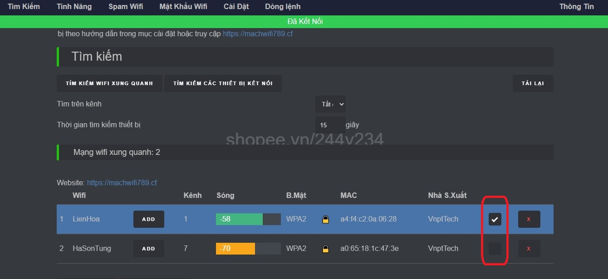

Mua hàng
Để tránh mua nhầm hàng giả, hàng nhái, hàng kém chất lượng, vui lòng đặt hàng theo link bên dưới
Shopee.vn/vuong234 (copy đường link rồi paste vào trình duyệt web)
Giới thiệu
Thiết bị này nhằm giúp các bạn và người thân chống lại những người hàng xóm hát karaoke vô ý thức, gây ảnh hưởng đến học tập, sinh hoạt, cũng như giấc ngủ.
Thiết bị chống hát karaoke vô ý thức hoạt động dựa trên lỗi trong tiêu chuẩn của wifi hiện hành.
Các tính năng chính
Video chi tiết về tính năng cũng như cách sử dụng:
1. Cấp nguồn cho thiết bị bằng sạc dự phòng, hoặc cục sạc thường điện thoại thông thường.
2. Kết nối với wifi 244v234 do thiết bị phát ra, mật khẩu: abcd1234
3. Sau khi kết nối thành công, mở ứng dụng duyệt web: chrome, safari, firefox, cốc cốc...... Sau đó truy cập vào 192.168.4.1
4. Bấm vào "TÔI ĐỒNG Ý KHÔNG SỬ DỤNG CHO MỤC ĐÍCH XẤU". Lúc này giao diện điều khiển sẽ hiện lên, và sẽ hiện tất các mạng wifi và thiết bị đang kết nối với các mạng wifi đó.

5. Nếu muốn tìm lại các mạng wifi xung quanh, bấm vào “TÌM KIẾM WIFI XUNG QUANH”. Sau đó tích vào các mạng wifi mà bạn muốn "Ngắt kết nối". Sau đó bấm vào mục "Tính Năng"(nếu muốn lấy mật khẩu wifi, bạn chỉ được tích vào 1 mạng duy nhất).
6. Bấm “START” ở tính năng "Ngắt Kết Nối". Lúc này đèn led trên thiết bị sẽ sáng lên. Và những mạng wifi bạn chọn sẽ bị mất kết nối wifi ngay lập tức. Sau đó bạn bấm "TẮT WIFI ĐIỀU KHIỂN" để tàng hình, tránh sự nhòm ngó của những người hát karaoke vô ý thức.

7. Nếu bấm "START" ở tính năng "Lấy Mật Khẩu", wifi điều khiển 244v234 sẽ biến mất, và sinh ra wifi nhái giống với wifi bạn chọn, để dụ hàng xóm truy cập.
- Nếu hàng xóm không nhập chính xác mật khẩu wifi nhà họ, thì wifi nhà họ sẽ bị ngắt kết nối liên tục.
- Còn nếu hàng xóm nhập chính xác mật khẩu wifi nhà họ, wifi nhái sẽ biến mất, và hiện lại wifi điều khiển 244v234. Và lúc này wifi nhà họ sẽ sử dụng được bình thường.
- Bạn truy cập lại vào wifi điều khiển và bấm vào mục "Mật Khẩu Wifi" để xem mật khẩu wifi đã thu được.

- Hướng anten của thiết bị về phía nhà hàng xóm.
- Số âm ở cột sóng càng nhỏ (màu xanh lá), thì modem wifi hàng xóm càng gần với bạn.
- 19h - 22h là thời điểm lấy mật khẩu wifi hiệu quả nhất! Vì thời điểm này nhà hàng xóm có nhiều người đang kết nối wifi.
- Để đảm bảo tính bí mật khi ngắt kết nối hàng xóm hát karoke vô ý thức, vui lòng bấm "Tắt Wifi Điều Khiển" sau khi chọn tính năng “Ngắt Kết Nối”.
Hướng Dẫn Nâng Cấp Phần Mềm
1. Dùng điện thoại phát wifi, sửa tên wifi phát ra thành: nguyenvuong mật khẩu: 12345678
2. Cấp nguồn cho thiết bị.
3. Chờ khoảng 1 phút, đèn led màu xanh dương trên thiết bị sẽ nhấp nháy. Và thiết bị sẽ kết nối về server để nâng cấp lên phần mềm mới.
4. Chờ đèn led ngừng nhấp nháy, bạn nhanh tay tắt wifi nguyenvuong của điện thoại đi là xong. Đợi thiết bị khởi động lại và sử dụng bình thường.
- Cần tư vấn hoặc hỗ trợ vui lòng nhắn zalo: 0812.116.820
- Thường xuyên kiểm tra cập nhật 1 tháng 1 lần, để nâng cấp các tính năng mới.